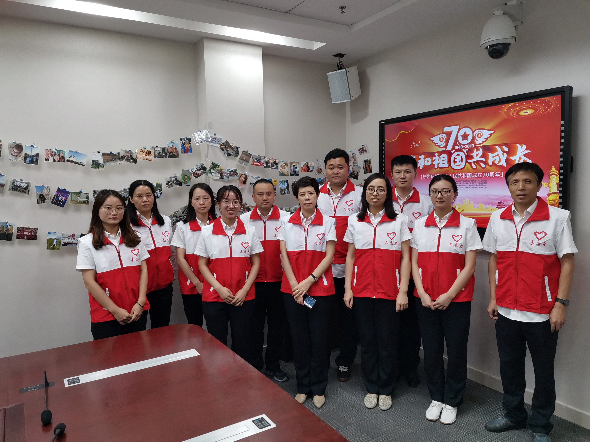

【信息发布时间：2019-10-12阅读次数：】 【我要打印】 【关闭】
为热烈庆祝中华人民共和国成立70周年，9月28日，苏州市公共资源交易中心张家港分中心举办了“我和祖国共成长”摄影展志愿者活动。
活动中，每位志愿者回顾梳理个人成长经历和生活变化，并将代表自己成长重要阶段的照片一一展示出来，汇集制作成照片墙，从每一个普通人的成长轨迹折射祖国几十年来的日新月异。在观赏照片的同时，大家密切地讨论祖国从以前的吃不饱、穿不暖，到如今全面建成小康社会的重大变化，不禁感慨只有不断奋斗才能过上更好的生活。中心也以本次摄影展活动为契机，开展“我与国旗合张影”活动，庆祝祖国母亲70岁生日快乐！
本次活动让大家更深刻地认识到生活水平逐步提高与祖国的繁荣发展密不可分，同时，也激励党员干部凝聚“初心意识”，不断提高服务水平，朝着建设科技型、服务型公共资源交易平台大步迈进。
